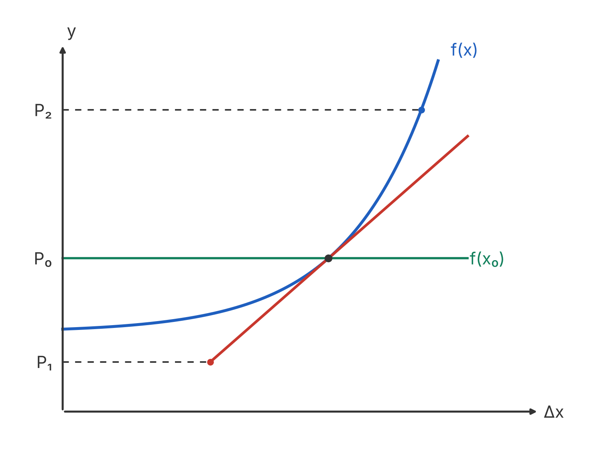

Serie de Taylor
Cualquier función "suave" puede aproximarse por un polinomio.
Una buena manera de comprender la serie de Taylor consiste en construirla término por término. Por ejemplo, el primer término de la serie es:
La aproximación de primer orden se obtiene sumando otro término para obtener:
Se le agrega a la serie un término de segundo orden para obtener "algo" de la curva que pudiera presentar la función:
De manera similar, se agregan términos adicionales para desarrollar la expresión completa de la serie:
De la manera:
Donde h = xᵢ₊₁ − xᵢ y Rₙ se obtiene:

Ejemplo de la serie de Taylor
- use expansiones de la serie de Taylor de los "órdenes" cero hasta el orden 3.
- Desde xᵢ = 0 con h = 1. Esto es, predigo el valor de la función en xᵢ₊₁ = 1.
- Se tiene xᵢ = 0, h = 1 y xᵢ₊₁ = 1, que reemplazados en la serie se obtiene:
- Para n = 0
- Para n = 1
- Para n = 2
- Para n = 3
f(x) = −0.1x⁴ − 0.15x³ − 0.5x² − 0.25x + 1.2
f(xᵢ₊₁) = f(xᵢ) + f'(xᵢ)(h) + f''(xᵢ)/2! h² + f'''(xᵢ)/3! h³
f(0) → −0.1(0)⁴ − 0.15(0)³ − 0.5(0)² − 0.25(0) + 1.2 ≅ 1.2
f(xᵢ₊₁) = f(xᵢ) → f(1) ≅ 1.2
f(0) → −0.1(0)⁴ − 0.15(0)³ − 0.5(0)² − 0.25(0) + 1.2 ≅ 1.2
f'(0)(1) → (−0.4(0)³ − 0.45(0)² − 1(0) − 0.25)h = −0.25h = −0.25
f(1) ≅ f(0) + f'(0)(1) → 0.95
f(0) → −0.1(0)⁴ − 0.15(0)³ − 0.5(0)² − 0.25(0) + 1.2 ≅ 1.2
f'(0)(h) → (−0.4(0)³ − 0.45(0)² − 1(0) − 0.25)h = −0.25h = −0.25
f''(0)h²/2! → (−1.2(0)² − 0.9(0) − 1)/2 h² = −0.5h² = −0.5
f(1) ≅ f(0) + f'(0)(1) + f''(0)h²/2! → f(1) ≅ 0.45
f(0) → −0.1(0)⁴ − 0.15(0)³ − 0.5(0)² − 0.25(0) + 1.2 ≅ 1.2
f'(0)(h) → (−0.4(0)³ − 0.45(0)² − 1(0) − 0.25)h = −0.25h = −0.25
f''(0)h²/2! → (−1.2(0)² − 0.9(0) − 1)/2 h² = −0.5h² = −0.5
f'''(0)h³/3! → (−2.4(0) − 0.9)/6 h³ = −0.15h³ = −0.15
f(1) ≅ f(0) + f'(0)(1) + f''(0)h²/2! + f'''(0)h³/3! → f(1) ≅ 0.3
Ejercicio 1
- Utilizando el polinomio de Taylor de tercer orden, centrado en a = 1, para aproximar e^1.2
- Evaluamos el polinomio en x = 1.2
- error absoluto
∑ₙ₌₀⁴ e⁽ⁿ⁾(1)/n! (x − 1)ⁿ = e(1 + (x − 1) + (x − 1)²/2! + (x − 1)³/3! + (x − 1)⁴/4!)
e^1.2 ≅ 3.3201094
aproximación con grado 4
e^1.2 = 3.3201169
valor real
0.00000749
Ejercicio 2
- Determinar el error absoluto de cuarto grado, centrado en a = 1 para aproximar ln(1.5) calcular error porcentual.
- Fórmula
- Para n = 0
- Para n = 1
- Para n = 2
- Para n = 3
- Para n = 4
- Error Absoluto
xᵢ = 1 ; xᵢ₊₁ = 1.5 ; h = 0.5 ; f(x) = ln|x|
f(xᵢ₊₁) = f(xᵢ) + f'(xᵢ)h + f''(xᵢ)/2! h² + f'''(xᵢ)/3! h³ + f''''(xᵢ)/4! h⁴
f'(xᵢ)h = 1/x
f'(1)(0.5) = 1/1 (0.5) ≅ 0.5
f(1.5) ≅ 0.5
f'(xᵢ)h = 1/x
f'(1)(0.5) = 1/1 (0.5) ≅ 0.5
f(1.5) ≅ 0.5
f''(xᵢ)/2! h² = (−1/1²)/2 (0.5)² ≅ −0.125
f(1.5) = 0.5 − 0.125
f(1.5) ≅ 0.375
f'''(xᵢ)/3! h³ = (2/1³)/6 (0.5)³ ≅ 0.0416
f(1.5) ≅ 0.375 + 0.0416
f(1.5) ≅ 0.4166
f''''(xᵢ)/4! h⁴ = (−6/1⁴)/24 (0.5)⁴ ≅ −0.0156
f(1.5) ≅ 0.4166 − 0.0156
f(1.5) ≅ 0.401
0.4054 ≅ 0.401
Eₐ = |0.4054 − 0.401| = 0.0044
Ejercicio 3
- Quinto grado centrado en a = π/4, para aproximar sen(π/3)
Determinar error absoluto. Considera todos los ángulos en radianes - Factor derivada, valor en π/4
- evaluando en π/3
- Error absoluto = 0.00000692
∑ₙ₌₀⁴ sen⁽ⁿ⁾(π/4)/n! (x − π/4)ⁿ
0 sen(x) √2/2
1 cos(x) √2/2
2 −sen(x) −√2/2
3 −cos(x) −√2/2
4 sen(x) √2/2
= sen(π/4) + cos(π/4)(x − π/4) − sen(π/4)/2 (x − π/4)² − cos(π/4)/6 (x − π/4)³ + sen(π/4)/24 (x − π/4)⁴
≅ 0.86601848 ← aproximación
sen(π/3) = 0.86602540
Ejercicio 4
- Sexto grado, centrado en a = 2, para aproximar ln(3)
Calcula aproximaciones desde el grado 1 hasta grado 6 y analiza cómo cambia el error relativo porcentual. - Valor aproximado y error relativo por grado
f(x) = ln(x), a = 2, x = 3 y h = x − a = 1
Grado 1: 0.693147 + 1/2 (1) = 1.193147, εr = 8.60 %
Grado 2: 1.193147 − 1/8 = 1.068147, εr = 2.77 %
Grado 3: 1.068147 + 1/24 = 1.109814, εr = 1.02 %
Grado 4: 1.109814 − 1/64 = 1.094189, εr = 0.40 %
Grado 5: 1.094189 + 1/160 = 1.100439, εr = 0.166 %
Grado 6: 1.100439 − 1/384 = 1.097835, εr = 0.071%
Ejercicio 5
- f(x) = 1/x²
Cuarto grado, a = 2
f(2.3) - xᵢ = 2 ; xᵢ₊₁ = 2.3 ; h = 0.3
- Para n = 0
- Para n = 1
- Para n = 2
- Para n = 3
- Para n = 4
- Error Absoluto = Ea = 0.01
0.1890 ≈ 0.1891
f(xᵢ) = 1/2² ≈ 1/4
f'(xᵢ)h = -2x⁻³h = -2(2)⁻³(0.3) ≈ -0.075
f(2.3) = -0.075 + 1/4 = 0.175
f''(xᵢ)/2! h² = 6x⁻⁴/2 h² = 0.0168
f(2.3) = 0.175 + 0.016875 ≈ 0.1918
f'''(xᵢ)/3! h³ = -24x⁻⁵/6 h³ = -0.0033
f(2.3) = 0.1918 - 0.0033 ≈ 0.1885
f''''(xᵢ)/4! h⁴ = 120x⁻⁶/24 h⁴ = 0.0006
f(2.3) = 0.1885 + 0.0006 ≈ 0.1891
Ejercicio 6
- f(x) = ln(x) , 5to grado , a = 2 , ln(2.6)
- Sustituyendo como en el ejercicio ① visto.
h = x - 2 = 0.6 ; h² = 0.36 , h³ = 0.216 , h⁴ = 0.1296
h⁵ = 0.07776
P₅ = 0.6931 + 1/2 (0.6) - 1/8 (0.36) + 1/24 (0.216) ...
1/64 (0.1296) + 1/160 (0.07776)
P₅(2.6) = 0.95560818056
ln(2.6) = 0.95551144506
Ea = 0.00009674
Ejercicio 7
- Cota del error para P₅
- Valor M (valor máximo 7ma derivada)
- Extremo más pequeño
Establece una cota para eror de truncamiento de p6
|Rₙ(x)| ≤ M/(n+1)! |x - a|ⁿ⁺¹
f⁽⁷⁾(x) = 720/x⁷
Intervalos a = 2 , x = 3.5
[2, 3.5]
M = 720/2⁷
M = 720/128 = 5.625
| R₆(3.5)| ≤ 5.625/5040 (1.5)⁷
| R₆(3.5)| ≤ 0.0190
Ejercicio 8
- f(x) = e²ˣ
Quinto grado
a = 1
aprox. e^2.4 - Derivada
- Aproximacion
- para que e^2x = e^2.4, x = 1.2, así que se evalúa en 1.2
- Aproximación final
- Valor verdadero
- Error Absoluto
e^2x
2e^2x
4e^2x
8e^2x
16e^2x
32e^2x
7.39
10.34
10.94
11.01
11.02
11.0231318174
∑ₙ₌₀⁵ f⁽ⁿ⁾(a)/n! (x - a)ⁿ = e² + 2e²(x - 1) + 4e²/2 (x - 1)² + 8e²/6 (x - 1)³ + 16e²/24 (x - 1)⁴ + 32e²/120 (x - 1
11.0231318174
11.0231318174
0.00004
Ejercicio 9
- f(x) = cos(2x), quinto grado, a = π/4, aprox cos(3π/5)
- Aproximaciones
- Error Relativo
- Derivadas
- f⁽ⁿ⁾(π/4)
- Valor real
- Valor Aproximado
0.0000
-0.31415927
-0.31415927
-0.30899156
-0.30899156
0.30901706
100%
1.66%
1.66%
0.0082%
0.0082%
0.00002%
derivada cos(2x)
-2sen(2x)
-4cos(2x)
8sen(2x)
16cos(2x)
-32sen(2x)
0
-2
0
8
0
-32
P₅(x) = 0 - 2(π/20) + 0(π/20)²/2!
8/3! (π/20)³ + 0/4! (π/20)⁴
32/5! (π/20)⁵
0.99945889
0.99999176
Ejercicio 10
- f(x) = 1/x
Cuarto grado
centrado en a = 2 y utiliza para aproximar
f(2.4) = 1/2.4 - Derivadas
- Solucion Anterior
- Sust. en x = 2.4
- Calculamos cada término
- Error Absoluto
P₄(x) = f(2) + f'(2)(x - 2) + f''(2)/2! (x - 2)² + f'''(2)/3! (x - 2)³ + f''''(2)/4! (x - 2)⁴
f(x) = 1/x → f(2) = 1/2 = 0.5
f'(x) = -1/x² → f'(2) = -1/4 = -0.25
f''(x) = 2/x³ → f''(2) = 2/8 = 0.25
f'''(x) = -6/x⁴ → f'''(2) = -6/16 = -0.375
f''''(x) = 24/x⁵ → f''''(2) = 24/32 = 0.75
P₄(x) = 0.5 - 0.25(x - 2) + 0.125(x - 2)² - 0.0625(x - 2)³ + 0.03125(x - 2)⁴
P₄(2.4) = 0.5 - 0.25(0.4) + 0.125(0.4)² - 0.0625(0.4)³ + 0.03125(0.4)⁴
0.25(0.4) = 0.1
0.125(0.16) = 0.02
0.0625(0.064) = 0.004
0.03125(0.0256) = 0.0008
P₄(2.4) = 0.5 - 0.1 + 0.02 - 0.004 + 0.0008
P₄(2.4) = 0.4168 → Eₐ
Eₐ ≈ 0.41667
Ejercicio 11
- f(x) = ln(x + 1)
Cuarto grado
a = 1 y aproximo ln(2.5)
f(x) = ln(x + 1)
f(1) = ln(2)
f'(x) = 1/(x + 1) → f'(1) = 1/2
f''(x) = -1/(x + 1)² → f''(1) = -1/4
f'''(x) = 2/(x + 1)³ → f'''(1) = 2/8 = 1/4
f⁽⁴⁾(x) = -6/(x + 1)⁴ → f⁽⁴⁾(1) =
P₄(x) = ln(2) + 1/2 (x - 1) + (-1/4)/2
Ejercicio 12
- f(x) = sen(2x)
Quinto grado
a = π/6, aproximo sen(2π/5) - Grado
- Valor Aproximado
- Error relativo
∑ₙ₌₀⁵ f⁽ⁿ⁾(π/6)/n! (π/30)ⁿ
= sen(π/3) + 2cos(π/3)(π/30) - 4sen(π/3)(π/30)²
8cos(π/3)(π/30)³ + 16sen(π/3)(π/30)⁴ + 32cos(π/3)(π/30)⁵
0
1
2
3
4
5
0.866025
0.970745
0.951751
0.950986
0.951055
0.951057
8.94%
0.07%
0.073%
0.0075%
0.00017%
0.00001%
Ejercicio 13
- f(x) = e^(x²) ; Cuarto grado ; a = 1 ; Aproximar e^1.21
- Formula
- Derivadas
x² = 1.21, se evalúa x = 1.1
P₄(x) = ∑ₙ₌₀⁴ f⁽ⁿ⁾(1)/n! (x - 1)ⁿ
f' = 2x e^(x²)
f'' = (2 + 4x²) e^(x²)
f''' = (12x + 8x³) e^(x²)
f'''' = (12 + 48x² + 16x⁴) e^(x²)
x = 1 : f = e , f' = 2e , f'' = 6e , f''' = 20e , f'''' = 76e
P₄(x) = e[1 + 2(x - 1) + 3(x - 1)² + 10/3 (x - 1)³ + 19/6 (x - 1)⁴]
P₄(1.1) = e[1 + 0.2 + 0.03 + 0.003333 + 0.000317] = e(1.23365) ≈ 3.3534
Eₐ = 3.353485 - 3.353408 ≈ 7.6 × 10⁻⁵
Eᵣ = 7.6 × 10⁻⁵ / 3.3535 = 2.27 × 10⁻⁵ → 0.00227 %